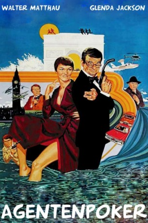
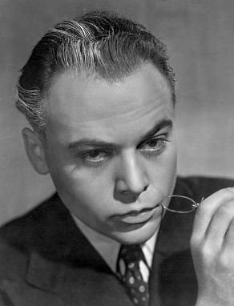
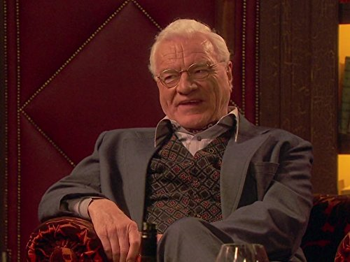

#6199 Agentenpoker
Alternativ: Hopscotch
 
 IMDB-Wertung: 7.2 / 10
IMDB-Wertung: 7.2 / 10  Metascore: 0
Metascore: 0 
CIA-Agent Miles Kendig ist ein alter Fuchs in seinem Job. Er versteht seinen Beruf und so sprengt er beispielsweise auf dem Münchner Oktoberfest ganz einfach einen sowjetischen Spionagering. Aber anstatt ihn dafür zu befördern, serviert ihn sein cholerischer Chef endgültig ab. Verärgert gibt Kendig seinen Job auf, um in Salzburg seine Geliebte Isobel zu besuchen. Da wird er von dem Sowjetagenten Yaskov dazu überredet, seine Autobiographie zu schreiben. Mit Freude tut er das auch und schickt jedes fertige Kapitel an seinen Exchef, aber auch an den KGB. Klar, dass bald zwei CIA-Agenten dazu abkommandiert werden, den Abtrünnigen zu finden. Sie haben aber mit der List und Schläue Kendigs nicht gerechnet und so beginnt ein Katz-und-Maus-Spiel, das rund um den Erdball führt ...
Jahr: 1980
Dauer: 104 Minuten
FSK: 0
Land: USA Studio: 'AVCO Embassy Pictures'Tonspuren: DD2.0 - ,
Untertitel:
Auflösung: 1080p (1920x816) Größe: 6717 MB
Genre: Komödie, Abenteuer
Regisseur: Ronald Neame
Drehbuch: James Napier Robertson
Soundtrack:
Darsteller:
 Walter Matthau als Miles Kendig / James Butler / Mr. Hannaway / Leonard Ross
Walter Matthau als Miles Kendig / James Butler / Mr. Hannaway / Leonard Ross- Glenda Jackson als Isobel
 Sam Waterston als Cutter
Sam Waterston als Cutter Ned Beatty als Myerson
Ned Beatty als Myerson-  Herbert Lom als Yaskov
 George Baker als Westlake
George Baker als Westlake- Severn Darden als Maddox
- Anne Haney als Mrs. Myerson
 Anthony Carrick als Salesman in Electric Shop
Anthony Carrick als Salesman in Electric Shop- Jeremy Young als Immigration Officer
- Sally Nesbitt als Telephone Operator
-  Philip Voss als Helicopter Pilot
- Allan Cuthbertson als Chartermain
- David Matthau als Ross
- Ivor Roberts als Ludlum
- Lucy Saroyan als Carla
- George Pravda als Saint Breheret
- Jacquelyn Hyde als Realtor
- Mike Gwilym als Alfie
- Terry Beaver als Tobin
- Ray Charleson als Clausen
- Christopher Driscoll als Policeman #1
- Michael Cronin als Policeman #2
- Roy Sampson als Police Sergeant
- Douglas Dirkson als Follett
- Shan Wilson als Spy in Oktoberfest
- Randal Patrick als Mechanic
- Joe Dorsey als Security Guard
- Candice Howard als Maddox's Receptionist
- Susan McShayne als Cocktail Waitress
- Yolanda King als Coffee Shop Manager
- Osman Ragheb als CIA Telephone Technician
- Roland Froehlich als Border Guard
- Susan Engel als Westlake's Receptionist
- Joanna McCallum als Bookshop Cashier
- Laura Whyte als Myerson's Secretary
- Larry Larson als FBI Technician
- Seab Worthy als FBI Man
- Danny Covington als Bellman
- Richard Moore als Seaplane Pilot
- Debra Hook als Band Singer
- The Silversmith Band als Disco Group
Datei: X:\1980\Agentenpoker (1980, FSK0, 1920x816).mkv seit 11.05.2017
Festplatte: HD 1980-1986
 Es gibt insgesamt 33 Filme in der Gruppe '1980'
Es gibt insgesamt 33 Filme in der Gruppe '1980'